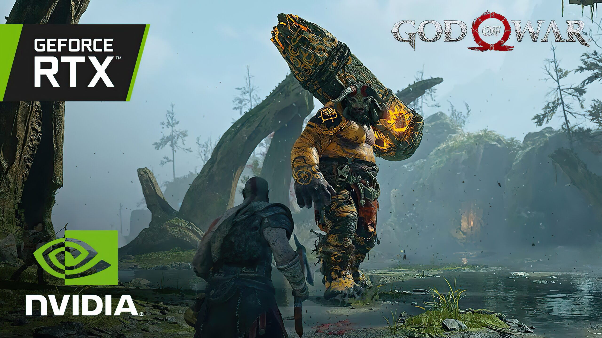
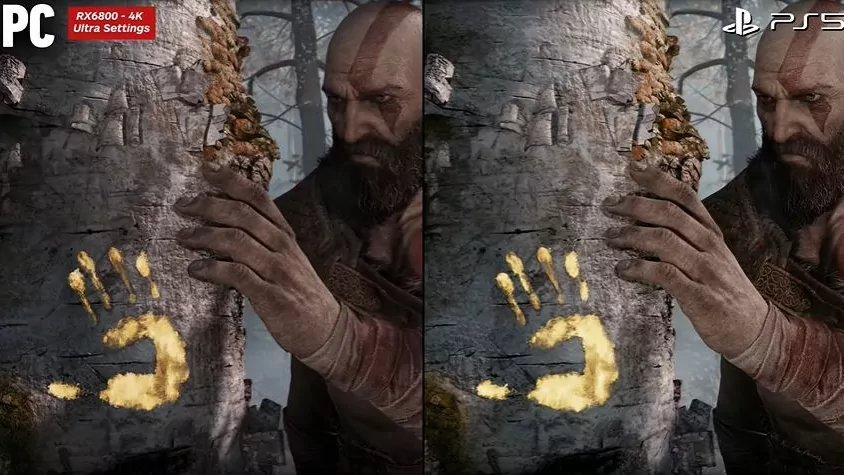

God of War PC - Caracteristicas PC

El port de playstation para PC viene con algunas ventajas que se pueden aprovechar garcias al hardware especial:
Gráficas de alta fidelidad
Impactantes gráficas optimizadas para PC. Disfruta de una verdadera resolución 4K
en dispositivos compatibles, con una velocidad de fotogramas desbloqueada para
un rendimiento máximo. Selecciona tus configuraciones a través de una amplia gama
de opciones y preconfiguraciones gráficas que incluyen sombras en alta resolución,
reflejos del espacio en pantalla mejorados, la incorporación de GTAO y SSDO, y muchas más.
Combatible con NVIDIA® DLSS y Reflex
La calidad se integra al rendimiento. Aprovecha el poder de la IA del Supermuestreo
de Aprendizaje Profundo (DLSS) de NVIDIA para aumentar los cuadros por segundo y
generar imágenes hermosas y nítidas en ciertos modelos de GPU de NVIDIA. Utiliza la
tecnología NVIDIA Reflex de baja latencia, que te permite reaccionar más rápido y
asestar combos más potentes utilizando una mecánica de juego que siempre has deseado
en las GPU de GeForce.

Personalización de los controles
Juega a tu modo. Con soporte para controles inalámbricos DUALSHOCK®4 y DUALSENSE®, así
como una amplia gama de mandos y la opción de personalizar por completo el teclado y el
mouse, tienes el poder de ajustar cada una de las acciones para jugar a tu estilo.
Compatibilidad con pantallas ultrapanorámicas
Sumérgete como nunca antes. Viaja a través de los reinos nórdicos disfrutando de impresionantes
paisajes en pantalla panorámica. Con la compatibilidad ultrapanorámica 21:9, God of War™ te
ofrece una experiencia de calidad cinematográfica que amplía aún más la impecable presentación
teatral original.
